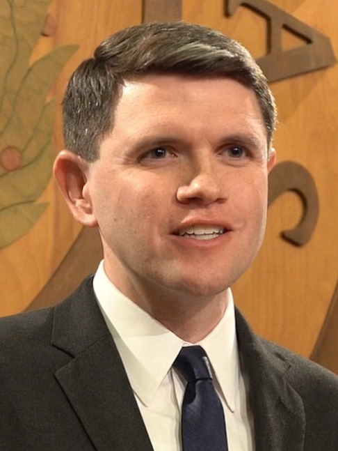
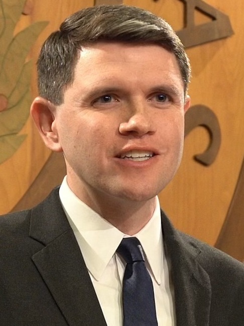

Visual identity and appearance research — James Talarico (D)视觉识别与外貌研究——James Talarico（民主党）
影像索引 / Image index
本页直接加载可本地展示的 7 张影像（该候选人共 18 条记录，其余 11 条只保留来源链接）。点击缩略图可打开原图。这些照片只用于核对「视觉形象」的可观察事实——面部几何、身体比例与着装仍未测量。
 2023-09-23 · Larry D. Moore
2023-09-23 · Larry D. Moore
2025-01-13 · Antonioaesparza 2025-01-13 · Antonioaesparza
2025-01-13 · Antonioaesparza
2025-01-13 · Antonioaesparza 2025-01-13 · Antonioaesparza
2025-01-13 · Antonioaesparza 2025-09-10 · H. Michael Karshis
2025-09-10 · H. Michael Karshis 2026-09-10 · Louise Palanker
2026-09-10 · Louise PalankerVisual identity and appearance research — James Talarico / 视觉识别与外貌研究——James Talarico
Companion dataset: image_archive.csv (18 Talarico rows).
配套数据集：image_archive.csv（18 条 Talarico 记录）。
Measured image statistics: _staging/_visual_metrics.csv.
已测量的图像统计量：_staging/_visual_metrics.csv。
1. Method, and the limits of this pass / 方法与本轮工作的限度
Three distinct kinds of evidence are separated throughout, because the brief requires the human researcher to judge images themselves:
本文件自始至终区分三类不同性质的证据，因为任务要求由人工研究者本人对图像作出判断：
- Provenance evidence (machine-verified). For every Wikimedia Commons file the archive records the file page, original file URL, author, licence, original pixel dimensions and capture date, all read from the Commons API (
action=query&prop=imageinfo&iiprop=url|size|mime|extmetadata). These fields areverifiedin the dataset. 来源溯源证据（经机器核验）。对每一份 Wikimedia Commons 文件，本档案记录其文件页面、原始文件 URL、作者、许可协议、原始像素尺寸与拍摄日期，全部读取自 Commons API（action=query&prop=imageinfo&iiprop=url|size|mime|extmetadata）。这些字段在数据集中标记为verified（已核实）。 - Documented description evidence. What outlets, captions, C-SPAN listings and campaign materials actually say about staging, signage, branding and setting. Cited to the outlet. Where a source is silent, the field says
unknown— it is never inferred from party or persona. 有文献记载的描述性证据。 即媒体、图片说明、C-SPAN 节目单与竞选材料实际就舞台布置、标语牌、品牌与场景所作的陈述。均注明出处媒体。凡来源未提及之处，相应字段记为unknown（未查明）——绝不根据党派或人物形象加以推断。 - Measured image statistics. Computed with Pillow/NumPy on the local copies: dimensions, aspect ratio, orientation, Laplacian-variance sharpness, mean luma, luma standard deviation, saturation proxy. These measure the photograph's frame, not the person. 已测量的图像统计量。 使用 Pillow/NumPy 在本地副本上计算：尺寸、宽高比、方向、拉普拉斯方差锐度、平均亮度、亮度标准差、饱和度代理指标。这些量测的是*照片的画面*，而不是本人。
Not performed, and why. No facial-landmark detection, facial-geometry ratio computation or body-proportion measurement was executed. The available Python environment contains Pillow and NumPy but no computer-vision library (cv2, mediapipe, dlib, face_recognition all absent), and the analyst model in this session cannot accept image input, so no visual judgement of any photograph was made by the researcher agent. Section 7 therefore supplies a precise, repeatable protocol instead of invented numbers. Nothing in this document should be read as a claim about his face, build or attire.
未执行的工作及其原因。 本档案未执行任何人脸关键点检测、面部几何比例计算或身体比例测量。可用的 Python 环境仅包含 Pillow 与 NumPy，不含任何计算机视觉库（cv2、mediapipe、dlib、face_recognition 全部缺失），且本次会话中的分析模型无法接收图像输入，因此研究者代理未对任何照片作出任何视觉判断。第 7 节因此提供一套精确、可重复的测量协议，而不是以虚构数字替代。本文件中的任何内容都不应被理解为关于其面部、体型或着装的主张。
2. Archive composition / 档案构成
| Property / 属性 | Value / 数值 |
|---|---|
| Rows 记录条数 | 18 |
| Licensed (CC) copies retained locally 本地保留的获许可（CC）副本 | 7 |
| Public-domain copies retained locally 本地保留的公有领域副本 | 2 |
| All-rights-reserved, link-and-credit-only records 保留全部权利、仅链接并注明出处的记录 | 9 |
Rows joined to a campaign event (event_id not unknown)与某场竞选活动关联的记录（ event_id 不为 unknown） | 10 |
| Date span 日期跨度 | 2023-09-23 → 2026-11-09 |
| Photographers represented 涉及的摄影师 | Antonio Aesparza (4), John Shinkle / Sen. Cornyn's office (2), Larry D. Moore (1), Eric Gay/AP (1), plus Getty and unnamed credits Antonio Aesparza（4 张）、John Shinkle／参议员 Cornyn 办公室（2 张）、Larry D. Moore（1 张）、Eric Gay/AP（1 张），另有 Getty 及未具名署名 |
| Settings represented 涉及的场景 | Texas Capitol press conference (4), rally (3), watch party (2), Senate orientation (2), Open Congress 2023 (1), teaching (1), out-of-state surrogate event (1) 德州议会大厦记者会（4）、集会（3）、观选派对（2）、参议院迎新（2）、2023 年 Open Congress（1）、教学（1）、州外代言活动（1） |
Coverage note — read this before using the archive. Commons coverage of Talarico is genuinely thin: a systematic enumeration of Category:James Talarico and its year subcategories returned only 14 files, of which 9 are usable photographs of him. The 60–100 photograph target per candidate specified in the brief was therefore not reachable for Talarico under a copyright-clean policy; the shortfall is documented rather than padded, and is itemised in research_gaps.md. News photography of him is almost entirely agency-licensed (AP, Getty, AFP) and is recorded link-only.
覆盖范围说明——使用本档案前请先读此段。 Commons 对 Talarico 的覆盖确实单薄：对 Category:James Talarico 及其按年份子分类的系统枚举仅得到 14 个文件，其中 9 份是关于他的可用照片。因此，任务中规定的每位候选人 60–100 张照片的目标，在版权清洁的政策下对 Talarico 而言无法达成；这一缺口被如实记录而非填充，并在 research_gaps.md 中逐项列明。关于他的新闻摄影几乎全部为通讯社授权（AP、Getty、AFP），因此仅记录为链接形式（link-only）。
3. Measured frame properties (7 locally held copies) / 已测量的画面属性（本地持有 7 份副本）
These describe the local archival copies (800px derivatives of the Commons originals), not the originals.
以下描述的*是本地档案副本*（Commons 原件的 800px 派生文件），而非原件本身。
| Metric / 指标 | Median / 中位数 | Min / 最小值 | Max / 最大值 |
|---|---|---|---|
| Aspect ratio (w/h) 宽高比（宽/高） | 0.800 | 0.667 | 1.932 |
| Laplacian variance (sharpness) 拉普拉斯方差（锐度） | 192.1 | 114.3 | 8045.4 |
| Mean luma (0–255) 平均亮度（0–255） | 103.0 | 73.4 | 126.0 |
| Luma std-dev (contrast) 亮度标准差（对比度） | 54.9 | 52.0 | 80.8 |
| Saturation proxy (0–1) 饱和度代理（0–1） | 0.3 | 0.1 | 0.3 |
Orientation: 5 portrait, 2 landscape. Original-file resolution class: 5 low (<2 MP), 1 medium (2–8 MP), 1 high (≥8 MP); median original size 0.56 MP.
方向：竖幅 5 张，横幅 2 张。原始文件分辨率等级：低（<2 MP）5 张，中（2–8 MP）1 张，高（≥8 MP）1 张；原始文件尺寸中位数 0.56 MP。
Interpretation is deliberately withheld. Two observations are safe and merely factual: the set is dominated by portrait-orientation crops suitable for head-and-shoulders use, and the mean luma sits mid-range, i.e. the frames are normally exposed rather than high-key or low-key.
本文件有意不作解读。有两项观察是稳妥的、且仅属事实陈述：该组图像以竖幅裁切为主，适合头肩式使用；平均亮度处于中段，即画面为正常曝光，而非高调或低调。
4. Documented visual identity — branding and iconography / 有据可查的视觉识别——品牌与图像符号
This is the substantive part of the visual record: what the campaign actually put in front of people.
这是视觉记录中具有实质内容的部分：竞选团队实际呈现在公众面前的东西。
- The tour brand is a television quotation. The October get-out-the-vote circuit was named "Clear Eyes, Full Hearts", taken from the Friday Night Lights motto "clear eyes, full hearts, can't lose." The campaign's own framing was unity-themed: "Texans are tired of being divided into teams — red versus blue, left versus right, rural versus urban. That's why we're traveling across the state to unite working people onto one team." (KWTX, 2026-10-16; see
talarico_timeline.md§5.) The name is a cultural citation rather than a partisan one, and it was reused verbatim as the speech opener on the tour ("Clear eyes, full hearts can't lose. There is a moment in every game…"). 巡回活动品牌借用自一部电视剧。 10 月的催票巡回活动被命名为 "Clear Eyes, Full Hearts"（译：清澈双眼，满腔热血），取自电视剧 Friday Night Lights（胜利之光）的格言 "clear eyes, full hearts, can't lose"（译：清澈双眼，满腔热血，永不认输）。竞选团队自己的框定以团结为主题："Texans are tired of being divided into teams — red versus blue, left versus right, rural versus urban. That's why we're traveling across the state to unite working people onto one team."（译：德州人已经厌倦了被分成两队——红对蓝、左对右、乡村对城市。这就是为什么我们要走遍全州，把劳动人民联合成一支队伍。）（KWTX，2026-10-16；另见talarico_timeline.md第 5 节。）该名称是一种*文化性*引用而非党派性引用，并在巡回活动中被逐字用作演讲开场语（"Clear eyes, full hearts can't lose. There is a moment in every game…"，译：清澈双眼，满腔热血，永不认输。每一场比赛里都有这样一个时刻……）。 - The brand was carried into paid media by casting the series' own actors. The 2026-10-17/18 ad featured Connie Britton, Jesse Plemons and Adrianne Palicki (Friday Night Lights cast members), with the line "It's time to leave it all on the field" and Kacey Musgraves audible at 0:56 (Deadline, 2026-10-19;
media_narrative_timeline.md§6). This is the clearest documented instance in the race of a campaign deliberately converting a pop-culture property into political identity. 该品牌通过起用该剧原班演员被带入付费媒体。 2026-10-17/18 的广告起用了 Connie Britton、Jesse Plemons 与 Adrianne Palicki（《胜利之光》演员），台词为 "It's time to leave it all on the field"（译：是时候把一切留在球场上了），并在 0:56 处可听到 Kacey Musgraves（Deadline，2026-10-19；media_narrative_timeline.md第 6 节）。这是本场竞选中，一次竞选团队有意将流行文化资产转化为政治身份的最清晰的有据案例。 - An official campaign logo exists and is archived. Wikimedia Commons holds
File:James Talarico for Senate logo.svg, sourced tojamestalarico.com, i.e. the campaign's own mark. It is vector artwork, so it is excluded from the photographic archive by rule but recorded here as identity evidence. (Commons file page) 存在一件官方竞选标志，且已存档。 Wikimedia Commons 收录了File:James Talarico for Senate logo.svg，其来源标注为jamestalarico.com，即竞选团队自己的标记。它是矢量图稿，按规则不计入摄影档案，但在此作为身份证据记录。（Commons 文件页面） - Campaign merchandise was reactive. The campaign turned Trump's derisive nickname "Talafreako" into supporter T-shirts, per El Paso Times reporting recorded at
TAL-SM-0008insocial_media.csv. This is a documented case of negative framing being absorbed into the campaign's own visual repertoire. 竞选周边具有回应性质。 据 El Paso Times 的报道（记录于social_media.csv中的TAL-SM-0008），竞选团队把 Trump 的贬损性绰号 "Talafreako"（译：怪胎 Talarico）做成了支持者 T 恤。这是一个有据可查的案例：负面框定被吸纳进竞选团队自身的视觉语汇之中。 - Election-night staging was flag-and-handmade-sign. At the Long Center victory event the record documents U.S. and Texas flags in the crowd and handmade signs reading "Love Thy Neighbor" and "Take Back Texas", with a Tejano and country soundtrack (
TAL-SPC-1113§10). Photographers credited there: Austin American-Statesman (Aaron E. Martinez), AFP and AP. 选举之夜的舞台布置是旗帜与手写标语。 在 Long Center 的胜选活动上，记录显示人群中有美国国旗与德州州旗，以及写有 "Love Thy Neighbor"（译：爱你的邻人）与 "Take Back Texas"（译：夺回德州）的手写标语，配以 Tejano 与乡村音乐（TAL-SPC-1113第 10 节）。该处列明的摄影师为：Austin American-Statesman（Aaron E. Martinez）、AFP 与 AP。
5. Documented staging and venues / 有据可查的舞台布置与场地
Venue type is part of the visual argument, and it is the best-documented category in this archive:
场地类型本身就是视觉论证的一部分，而且它是本档案中记录最充分的一类：
| Event / 活动 | Setting as documented / 有文献记载的场景 | Evidence / 证据 |
|---|---|---|
| Launch, 2025-09-09, Round Rock 启动仪式，2025-09-09，Round Rock | Lectern-and-plaza staging; television footage described, clothing not documented 讲台与广场式布置；电视画面有所描述，着装无记录 | TAL-EVT-0001 visual_notes |
| Covenant Presbyterian sermon, Lubbock, 2026-02 Covenant Presbyterian 布道，Lubbock，2026-02 | Pulpit, a few dozen congregants, "nary an empty row" 讲坛，数十名会众，"nary an empty row"（译：几乎没有一排空位） | TAL-SPC-1102 |
| Lubbock rally, 2026-02 Lubbock 集会，2026-02 | unknown — no captioned photograph retrievedunknown（未查明）——未取得带说明的照片 | TAL-SPC-1103 |
| Houston, Bayou Music Center Houston，Bayou Music Center | Large indoor music venue; down-ballot officials on stage before him 大型室内音乐场馆；在其之前有同票层级选官员上台 | TAL-SPC-1111 |
| Midland, The Loft, 2026-10-27 Midland，The Loft，2026-10-27 | Music/event space, packed room 音乐／活动空间，房间满座 | TAL-SPC-1110 |
| Austin, Stubb's, 2026-11-02 Austin，Stubb's，2026-11-02 | Outdoor barbecue/music venue, dense standing crowd 户外烧烤／音乐场地，密集的站立人群 | TAL-SPC-1112 |
| Austin, Long Center, 2026-11-03 Austin，Long Center，2026-11-03 | Indoor performing-arts venue; flags, handmade signs, Tejano/country 室内表演艺术场馆；旗帜、手写标语、Tejano／乡村音乐 | TAL-SPC-1113 |
The pattern is documented, not inferred: church hall → university → music venue → outdoor barbecue venue → performing-arts centre. Whether that progression was a deliberate venue-selection strategy is not documented and is not asserted here.
上述序列是有文献记载的，而非推断所得：教堂礼堂 → 大学 → 音乐场馆 → 户外烧烤场地 → 表演艺术中心。这一递进是否为有意为之的场地选择策略，没有文献记载，本文件亦不作此断言。
6. Clothing and grooming — the documentary gap / 着装与仪容——文献缺口
No retrieved source describes Talarico's clothing at any event. This is a finding about the evidence, not about him. Eleven separate key-speech analyses record the clothing field as ⚠ unknown, and the archive's clothing_notes column is unknown for all 18 rows. The campaign_events.csv table, which holds 27 fields including visual_notes, carries a clothing description for zero Talarico rows.
没有任何已取得的来源描述 Talarico 在任何活动上的着装。 这是一项关于证据的发现，而不是关于他本人的发现。十一份独立的关键演讲分析均将着装字段记为 ⚠ unknown，本档案的 clothing_notes 列在全部 18 条记录中均为 unknown。包含 visual_notes 在内共 27 个字段的 campaign_events.csv 表，对 0 条 Talarico 记录载有着装描述。
Consequently this archive supports no claim about suit colour, tie presence, sleeve length, footwear, grooming or any "everyman" styling. Anyone writing that he "dressed like a teacher" or "eschewed the suit" is writing without a documentary basis in these materials. If the human researcher or an image-capable analyst inspects the nine licensed local copies, those fields can be filled in from direct observation and this section revised.
因此，本档案不支持任何关于西装颜色、是否佩戴领带、袖长、鞋履、仪容或任何「平民化」造型的主张。任何写下他「穿得像个老师」或「不着西装」的人，都是在缺乏本批材料文献依据的情况下写作。若人工研究者或具备图像处理能力的分析者检视那九份本地获许可副本，这些字段即可通过直接观察填入，本节也可随之修订。
7. Facial geometry and body proportion — protocol (not performed) / 面部几何与身体比例——测量协议（未执行）
No measurement was made. The following definitions are supplied so the human researcher can execute the brief's request reproducibly on the local copies.
未进行任何测量。以下定义供人工研究者在本地副本上以可重复的方式执行任务要求。
Prerequisites. One frontal, neutral-expression photograph with the full head and shoulders visible and minimal perspective distortion; a landmark tool (e.g. MediaPipe Face Mesh, dlib 68-point, or manual annotation in ImageJ/Fiji).
前提条件。 一张正面、表情中性、完整可见头部与肩部且透视畸变极小的照片；一个关键点标注工具（例如 MediaPipe Face Mesh、dlib 68 点模型，或在 ImageJ/Fiji 中手工标注）。
Landmarks to annotate. Nasion (bridge of nose), pronasale (nose tip), subnasale, gnathion (chin), right and left zygion (widest cheekbone points), right and left endocanthion (inner eye corners), right and left exocanthion (outer eye corners), right and left tragion (ear canal), vertex (top of head).
需要标注的关键点。 鼻根点（nasion，鼻梁）、鼻尖点（pronasale）、鼻下点（subnasale）、颏下点（gnathion，下巴）、左右颧点（zygion，颧骨最宽处）、左右内眦点（endocanthion，内眼角）、左右外眦点（exocanthion，外眼角）、左右耳屏点（tragion，耳道）、头顶（vertex，颅顶）。
Ratios to compute and report (with the formula written down each time).
需计算并报告的比值（每次均须写明公式）。
| Measure / 指标 | Definition / 定义 |
|---|---|
| Facial width-to-height (fWHR) / 面部宽高比（fWHR） | bizygomatic width ÷ (nasion→gnathion height) 颧宽 ÷（鼻根点至颏下点的垂直距离） |
| Facial index / 面部指数（facial index） | (nasion→gnathion) ÷ bizygomatic width × 100 （鼻根点至颏下点）÷ 颧宽 × 100 |
| Intercanthal ratio / 内眦间距比（intercanthal ratio） | intercanthal distance ÷ biocular width 内眦间距 ÷ 双眼宽 |
| Facial thirds / 面部三等分 | upper (trichion→nasion), middle (nasion→subnasale), lower (subnasale→gnathion) as % of total facial height 上庭（发际点至鼻根点）、中庭（鼻根点至鼻下点）、下庭（鼻下点至颏下点）各占面部总高度的百分比 |
| Head height as fraction of frame / 头高占画面比例 | vertex→gnathion ÷ image height （头顶至颏下点）÷ 图像高度 |
| Shoulder-to-head ratio / 肩宽与头高比 | biacromial width ÷ head height 肩峰间宽 ÷ 头高 |
Mandatory caveats to record with any numbers. Lens focal length and distance distort ratios (portrait lenses compress mid-face); a smiling or tilted subject invalidates neutral-pose ratios; hairline definitions change the upper third; and no ratio in this list is a validated predictor of any psychological or political trait. Report the photograph's provenance alongside every number, and do not average across different lenses and crops.
任何数字都必须一并记录的强制警示。 镜头焦距与拍摄距离会扭曲比值（人像镜头会压缩面中部）；被摄者微笑或头部倾斜会使中性姿态比值失效；发际线的界定会改变上庭；且本清单中没有任何一项比值被验证为任何心理或政治特质的预测指标。每一个数字都须附照片的来源信息，且不得在不同镜头与裁切之间取平均。
8. Asymmetry with the opponent's archive / 与对手档案之间的不对称
Talarico holds 18 archived images against Paxton's 98. The cause is documented and material, not a research failure: Commons hosts roughly a hundred freely licensed photographs of Paxton from conservative conference circuits (AmericaFest 2024 and 2025 in particular), while Talarico's freely licensed coverage is limited to a handful of press-conference, legislative and victory-night images. Any visual comparison built on this archive would be comparing one candidate's candid conference photography against the other's sparse official and press imagery. That asymmetry must be stated wherever images are used comparatively; it is recorded in research_gaps.md.
Talarico 在本档案中存有 18 张图像，而 Paxton 为 98 张。其原因是有文献记载的、实质性的，并非研究失败：Commons 收录了约一百张来自保守派会议巡回活动的 Paxton 自由许可照片（尤其是 2024 年与 2025 年的 AmericaFest），而 Talarico 的自由许可覆盖仅限于少量记者会、立法场合与胜选之夜图像。任何基于本档案的视觉比较，都将是用一位候选人坦率的会议摄影，去对比另一位候选人稀疏的官方与新闻影像。凡在比较性使用图像之处，都必须说明这一不对称；该点记录于 research_gaps.md。
Sources / 来源
Citation strings are reproduced as published (English titles, byte-for-byte URLs) so that every reference stays verifiable; the Chinese gloss renders the description only.
引证字符串按原发表形式复制（英文标题、逐字 URL），以使每条参考都可核验；中文说明仅对描述内容作翻译。
- Wikimedia Commons API and file pages, enumerated 2026-11-10:
Category:James Talaricoand its year subcategories; per-fileimageinfometadata (URL, size, licence, author, date). Wikimedia Commons API 与文件页面，枚举日期 2026-11-10：Category:James Talarico及其按年份子分类；逐文件imageinfo元数据（URL、尺寸、许可协议、作者、日期）。 - KWTX, "James Talarico announces statewide 'Clear Eyes, Full Hearts' tour", 2026-10-16 — https://gray-kwtx-prod.gtv-cdn.com/2026/10/16/james-talarico-announces-statewide-clea… KWTX，2026-10-16（译：James Talarico 宣布全州「清澈双眼，满腔热血」巡回活动）
- Deadline, "'Friday Night Lights' Stars Campaign For James Talarico In Midterm Ad", 2026-10-19 — https://deadline.com/2026/10/james-talaricos-friday-night-lights-ad-midterms-1237168179/ Deadline，2026-10-19（译：《胜利之光》主演在一支中期选举广告中为 James Talarico 助选）
- El Paso Times (nickname merchandise), quoted at
TAL-SM-0008in05_campaign_media/social_media.csv. El Paso Times（绰号周边商品），引用于05_campaign_media/social_media.csv中的TAL-SM-0008。 - Key-speech analyses in
03_speeches/key_speech_analysis/(staging sections), each with its own source list.03_speeches/key_speech_analysis/中的关键演讲分析（舞台布置各节），各自附有自己的来源清单。 - Event staging notes:
02_campaign_events/campaign_events.csv, columnvisual_notes. 活动舞台布置备注：02_campaign_events/campaign_events.csv，visual_notes列。 - Measured statistics:
_staging/_visual_metrics.csv(generated by_staging/_lead_visual_metrics.py). 已测量的统计量：_staging/_visual_metrics.csv（由_staging/_lead_visual_metrics.py生成）。